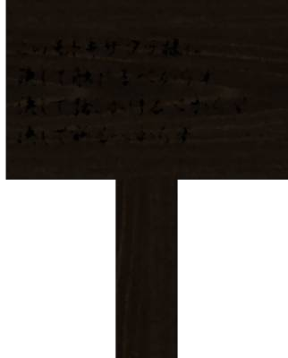
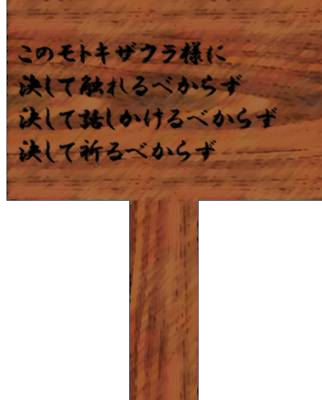
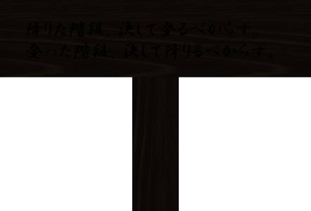
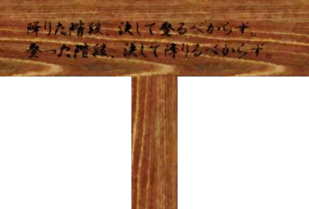

Motokizakura-sama 2

Yes, the story I'm about to tell is 'Motokizakura-sama.' [TN: Motokizakura: 'Motoki cherry tree'; -sama is an honorific.]
It's an urban legend of Motoki-cho.
But it differs from person to person, so it's an unusual one, with as many versions as there are people.
It's an urban legend of Motoki-cho.
But it differs from person to person, so it's an unusual one, with as many versions as there are people.
"Motokizakura-sama. This is a kind of yokai that dwells only in Motoki-cho.
But the stories of Motokizakura-sama differ a great deal from person to person.
Do you know why that is?"
I asked the Motoki-cho group, but they all shook their heads.
Good, good. This might work.
I asked the Motoki-cho group, but they all shook their heads.
Good, good. This might work.

There are said to be as many Motokizakura-sama as there are cherry trees in Motoki-cho.
In other words, there isn't just one Motokizakura-sama. There are countless of them.
In other words, there isn't just one Motokizakura-sama. There are countless of them.

Normally they can't be seen, but according to people who happened to witness one, she's a beautiful woman in a kimono with a cherry-blossom pattern.
And they all look the same.
And they all look the same.
Most of them are said to be something like guardian deities, always watching over the people of Motoki-cho.
That's why Motoki-cho is said to have few crimes and accidents.
But in exchange, the rare incidents and accidents that do happen are said to be horrific.
That's why Motoki-cho is said to have few crimes and accidents.
But in exchange, the rare incidents and accidents that do happen are said to be horrific.
Because there are Motokizakura-sama who are like evil spirits.
But since they all look the same, no one can tell them apart, and some people who carelessly approach one, far from receiving blessings, are said to meet a horrible fate.
But since they all look the same, no one can tell them apart, and some people who carelessly approach one, far from receiving blessings, are said to meet a horrible fate.
That was a long introduction, but this time it's the story of an especially malicious Motokizakura-sama.
This is the story of a girl who was in middle school about 10 years ago.
This is the story of a girl who was in middle school about 10 years ago.

For now, let's call that girl Girl A.
Girl A's family was one that worshipped Motokizakura-sama.
Since most of them are guardian deities, there are apparently families that worship them like that.
On the other hand, the worship is also meant to protect them from malicious Motokizakura-sama.
Girl A's family was one that worshipped Motokizakura-sama.
Since most of them are guardian deities, there are apparently families that worship them like that.
On the other hand, the worship is also meant to protect them from malicious Motokizakura-sama.
During Golden Week of Girl A's second year of middle school, the family went on a trip by car.
The plan was apparently to leave at night and reach their destination in the morning.
There were four of them: Girl A, her parents, and her little sister.
The plan was apparently to leave at night and reach their destination in the morning.
There were four of them: Girl A, her parents, and her little sister.

―Night, 23:00. They were driving across the summit of Mount Motoki.
Summit or not, it was flat enough for cars to drive on.
Girl A and her sister were asleep in the car, and their parents were taking turns driving.
That was when it happened.
Summit or not, it was flat enough for cars to drive on.
Girl A and her sister were asleep in the car, and their parents were taking turns driving.
That was when it happened.

A figure up the road.
Who could it be, this deep in the mountains?
When they drew closer―
Who could it be, this deep in the mountains?
When they drew closer―


A woman in a cherry-blossom-patterned kimono.
"It's Motokizakura-sama!"
At their father's voice, Girl A and her sister woke up.
"It's Motokizakura-sama!"
At their father's voice, Girl A and her sister woke up.

There was a sign there that read "Mount Motoki Summit."
They stopped the car beside the sign,
"Is something the matter? Would you like us to give you a ride?"
When their father said that, the woman gave a small nod.
"Girls, it's Motokizakura-sama! Scoot over! Here, please, please, come in!"
"Is something the matter? Would you like us to give you a ride?"
When their father said that, the woman gave a small nod.
"Girls, it's Motokizakura-sama! Scoot over! Here, please, please, come in!"
Their father pressed Motokizakura-sama on the back, urging her into the car.
Since they worshipped Motokizakura-sama, Girl A and the others immediately made room and welcomed Motokizakura-sama in.
With Motokizakura-sama aboard, the car set off.
Motokizakura-sama was riding with them. There were sure to be blessings!
Girl A and her sister were wide awake, and excited, even though it was the middle of the night.
Girl A and her sister were wide awake, and excited, even though it was the middle of the night.
―After they had driven for about 5 minutes...
"Would you let me off here?"
Motokizakura-sama said.
They were still deep in the mountains.
She must have wanted to go somewhere out of human sight.
"Would you let me off here?"
Motokizakura-sama said.
They were still deep in the mountains.
She must have wanted to go somewhere out of human sight.

They stopped the car and let Motokizakura-sama out.

Motokizakura-sama bowed once, then headed toward the slope beside the road.
The slope was rough, rocky ground that looked hard to walk on.
But Motokizakura-sama climbed it without the slightest trouble.
But Motokizakura-sama climbed it without the slightest trouble.

Looking closely, they saw a narrow flight of stone steps on the slope.
Motokizakura-sama went up those stairs and vanished into the darkness.
"Dad, let's go after her!"
When Girl A suggested it, everyone agreed at once.
Motokizakura-sama's dwelling had to be up ahead.
It would be rude, they felt, not to at least say a prayer there.
When Girl A suggested it, everyone agreed at once.
Motokizakura-sama's dwelling had to be up ahead.
It would be rude, they felt, not to at least say a prayer there.
With no streetlights and no moonlight, it was pitch-dark all around.
The four of them climbed the stone steps, watching their footing.
The four of them climbed the stone steps, watching their footing.
―But however far they went, they couldn't see the end of the stairs. The dark made it worse.
"Dad, let's go back already..."
"We've had the good fortune to meet Motokizakura-sama. We can't go home without doing anything!"
One by one, complaints began to come from Girl A and her sister.
"Dad, let's go back already..."
"We've had the good fortune to meet Motokizakura-sama. We can't go home without doing anything!"
One by one, complaints began to come from Girl A and her sister.
Just then.

Suddenly the view opened up, and they reached the top.
Waiting at the top was a small shrine.
This had to be that Motokizakura-sama's dwelling.
Waiting at the top was a small shrine.
This had to be that Motokizakura-sama's dwelling.
"See, girls, aren't you glad we came? We made it all the way to Motokizakura-sama's home!"
"Way to go, Dad!"
The tiredness from climbing the stone steps vanished all at once.
"Way to go, Dad!"
The tiredness from climbing the stone steps vanished all at once.
"Well then, let's pray properly.
Motokizakura-sama, thank you for always protecting us. Yrrehce Htybdel Likerew Srehcrae Sereht."
At their mother's word, the four of them clapped their hands at the shrine and prayed.
Now their Golden Week family trip was sure to be a happy one.
They would come back here and pay their respects again on the way home.
It was while they were talking like that and starting back toward the stone steps.
Now their Golden Week family trip was sure to be a happy one.
They would come back here and pay their respects again on the way home.
It was while they were talking like that and starting back toward the stone steps.

Girl A noticed a signboard beside the shrine.
It was very old and seemed to have been put up long ago.
Girl A and the others shone their phone lights on it and read the writing.
It was very old and seemed to have been put up long ago.
Girl A and the others shone their phone lights on it and read the writing.

This Motokizakura-sama
Never touch
Never speak to
Never pray to
Never touch
Never speak to
Never pray to
"Dad... you spoke to her earlier, and you pushed her on the back when we let her in the car, didn't you...?"
"And... we prayed..."
Could it really have been a malicious Motokizakura-sama?
The blood drained from all four of their faces, and the four of them ran hurriedly down the stone steps.
"And... we prayed..."
Could it really have been a malicious Motokizakura-sama?
The blood drained from all four of their faces, and the four of them ran hurriedly down the stone steps.

―But what was this?
No matter how long they went on, they couldn't reach the road. The stone steps just kept going.
This was wrong! They should definitely have reached the road by now!
When they happened to look back...
No matter how long they went on, they couldn't reach the road. The stone steps just kept going.
This was wrong! They should definitely have reached the road by now!
When they happened to look back...
Apparently the summit, which should have been far behind them, was only a few steps above, and the shrine was in view.
Stairs they went down and down, yet could never get down.
Could it be that it was already too late?
Stairs they went down and down, yet could never get down.
Could it be that it was already too late?
No, they were imagining it! There were several paths, and they must have gone down the wrong steps.
They had no choice but to tell themselves things that made no sense by reason or by logic.
They had no choice but to tell themselves things that made no sense by reason or by logic.
Thinking that if going down didn't work they should go up, they returned to the shrine to look for another set of stairs.

The signboard beside the shrine caught their eye, but...
it was clearly different from the one they had seen before.
When they read the signboard...
When they read the signboard...

The stairs you descended, never climb
The stairs you climbed, never descend
It was only two lines, but it was enough to strike the four of them with even greater terror.
Then,
The stairs you climbed, never descend
It was only two lines, but it was enough to strike the four of them with even greater terror.
Then,
From below on the stone steps, the woman from before, in the cherry-blossom-patterned kimono.
As the woman was about to pass by Girl A and the others...
her kimono brushed Girl A's hand.
Never touch
"Uh, how might we get back?"
Never speak to
"Please! Please help us!
Yrrehce Htybdel Likerew Srehcrae Sereht!
Yrrehce Htybdel Likerew Srehcrae Sereht!"
Never pray to

You are my friends.

Countless eyes appeared on Motokizakura-sama's face, and the cherry-blossom pattern of her kimono turned into bloodstains.
The four of them ran headlong down the stairs they had climbed.
The four of them ran headlong down the stairs they had climbed.
The stairs you climb ed , ne v er d e s c e n d .

―It was after Golden Week that the incident became public.
Girl A's family's car had been left on the summit, and the four of them were missing.
Girl A's family's car had been left on the summit, and the four of them were missing.
Rumor has it that right next to the car on the summit, four unnaturally grown cherry trees were found, along with the clothes of the four.
Perhaps Girl A and her family, being worshippers, prayed at that shrine without seeing the warning on the signboard.
So even if you see Motokizakura-sama, you mustn't speak to her, touch her, or put your hands together to her.
And you mustn't go back the way you came.
But since most Motokizakura-sama are good guardian deities, it's said that it's best to pray quietly, in your heart.
So even if you see Motokizakura-sama, you mustn't speak to her, touch her, or put your hands together to her.
And you mustn't go back the way you came.
But since most Motokizakura-sama are good guardian deities, it's said that it's best to pray quietly, in your heart.
"That's the end.
That's the best I could do!"


"Hey, Natsumi. How does this story connect to Mom's story from before?"
"Lots of Motokizakura-sama are guardian deities, so maybe one helped pass on the message of the high-school girl who jumped in front of the train."
I got by with an offhand answer.
"Lots of Motokizakura-sama are guardian deities, so maybe one helped pass on the message of the high-school girl who jumped in front of the train."
I got by with an offhand answer.

"I see. If there are lots of Motokizakura-sama, that makes for all kinds of versions of the urban legend, and all kinds of interpretations too."
Read ✓ Next in this arc →